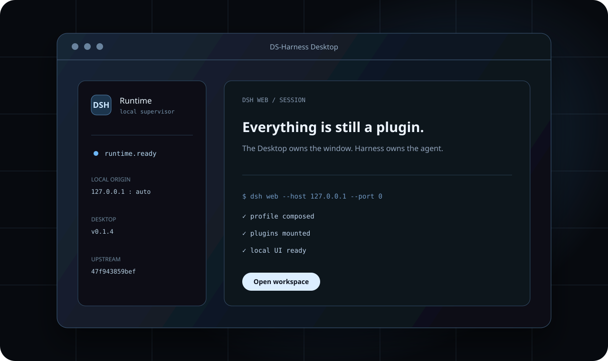

One-click launch
Starts the standard dsh web profile, waits for readiness, then opens the owned loopback origin.
Desktop runtime for DeepSeek Harness
Launch the standard Harness Web experience as a native application. No repository setup, no startup command, no separate browser.
v0.1.5 · macOS Apple Silicon · Windows ARM64 / x64
One local application

Desktop responsibilities
Starts the standard dsh web profile, waits for readiness, then opens the owned loopback origin.
Owns bounded logs, crash recovery, process-tree shutdown, isolated data, and explicit diagnostics.
Every build records both the Desktop commit and the exact official Harness submodule commit.
Checks Desktop Releases and official Harness movement separately. Installed code changes only through a verified installer.
Architecture
Desktop does not fork the agent, LLM, loop, plugins, sessions, or Web UI. It creates the native process and window that host the official assembled runtime.
Visit deepseek-ai/deepseek-harnessDeveloper preview
The first release line is unsigned. macOS and Windows show a one-time trust prompt; the installation guide keeps the exception scoped to this application.